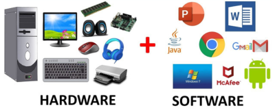

ABOUT
A computer is an electronic device that manipulates information, or data. It has the ability to store, retrieve, and process data. You may already know that you can use a computer to type documents, send email, play games, and browse the Web. You can also use it to edit or create spreadsheets, presentations, and even videos.
Hardware vs. Software

Before we talk about different types of computers, let's talk about two things all computers have in common: hardware and software.
Hardware is any part of your computer that has a physical structure, such as the keyboard or mouse. It also includes all of the computer's internal parts, which you can see in the image below.
Softwareis any set of instructions that tells the hardware what to do and how to do it. Examples of software include web browsers, games, and word processors.
Everything you do on your computer will rely on both hardware and software. For example, right now you may be viewing this lesson in a web browser (software) and using your mouse (hardware) to click from page to page. As you learn about different types of computers, ask yourself about the differences in their hardware. As you progress through this tutorial, you'll see that different types of computers also often use different types of software.